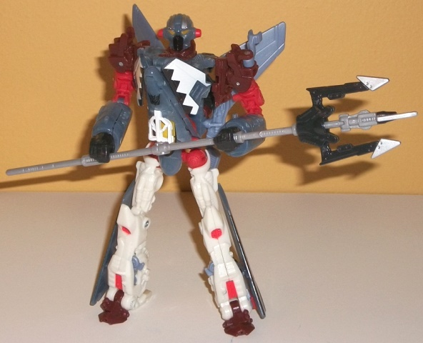
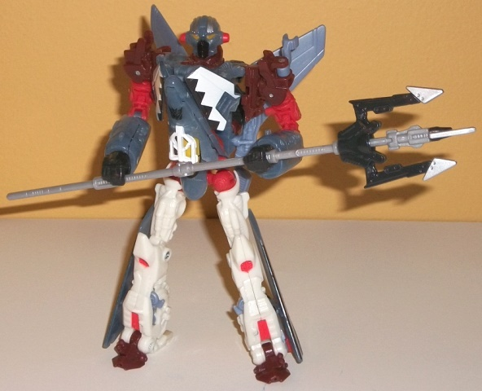

Space
Case (DotM) [Target Exclusive]
Space
Case (DotM) [Target Exclusive]
 

(NOTE: Because this is a repaint, this is not a full-blown review. This mainly covers any changes made to the mold and the color scheme, and merely compares it to Autobot Alliance Terradive. For a review on the mold itself, read the review of Autobot Alliance Terradive here .)
DotM Space Case is a
"light" homage to the Generation 2 character of the same name. They're
both fairly similar jets, and share a white/blue color scheme with a bit
of red and yellow. That's about where the homages stop though, as this
version has a lot more blue on it-- a rather cool-looking, pale translucent
pale blue shade, to be precise. The translucent color of the vehicle mode--
and the silver "Cyberglyph" paint apps on parts of this mode-- help to
tie him into the other "Cyberglyph" Target exclusives for the line, of
which he's the only new character of the bunch. The white plastic (more
visible in robot mode) goes quite well with the translucent blue and serves
as a nice lighter color. There's a pretty good amount of other colors,
too, that are used sparingly; light red, on his waist, shoulders, as well
as on lightning bolt symbols on his vehicle mode nosecone and wings (this
is another homage to his G2 version); yellow on his cockpit and robot eyes
(another G2 homage); a more pearlescent shade of blue on his rear wings
and a few minor parts of his robot mode that couldn't be translucent plastic
for whatever reason; black on a few minor connector pieces and on a neat
"triangular border" pattern on his wings; and, in a neat color addition
that did NOT exist on his G2 version, some bits of dark muddy brown on
a few minor robot parts. Most of them look pretty good against each other,
and the little bit of boring light milky gray that there is on this toy
is mostly confined to the trident staff, so that's not a bit deal here.
My favorite paint apps in particular are the yellow paint on what looks
like the
inside
of the cockpit window, making it look semi-translucent
itself, and the aforementioned triangular patterns on the wings. The Cyberglyph
paint apps honestly make Space Case's alt mode look a bit cluttered here.
He's got plenty of paint apps in both modes, though, so he doesn't look
remotely boring or one-tone anywhere. The one color I'm not fond of is
the more solid shade of light pale blue plastic on the toy; used on little
parts like the landing gear it's no biggie, but when it's right up against
the translucent version of the color (such as near the tail wings in vehicle
mode), it's noticeably JUST different enough where it's a bit distracting.
Space Case has one mold
change, and it's a new head. It doesn't look at all like G2 Space Case's,
but it still looks pretty nice and individualistic, with a dome-shaped
head, faceplate, and little "ear knobs" at the side. The light piping works
quite well on the eyes, as well. I think the Terradive head looks a little
better, but this version isn't bad by any means.
DotM Space Case is a
really spiffy redeco that's a callback to a rather obscure G2 toy, and
those I pretty much always like-- especially when they're covered in as
much paint as this guy is. (Really, his jet mode almost has TOO MUCH paint.)
Add to that that this is one of the most awesome movie-verse molds to come
out, and you have a highly recommended purchase-- if you can find one,
that is. Unfortunately, this guy was only one-per-case in an exclusive
wave that got somewhat limited distribution, so his aftermarket prices
can be a bit steep. (If you only get ONE version of this mold, though,
I'd make it
TFCC Depth Charge
.)
Review by Beastbot